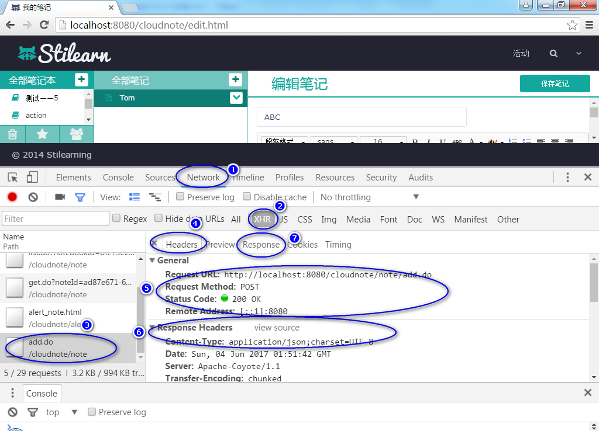
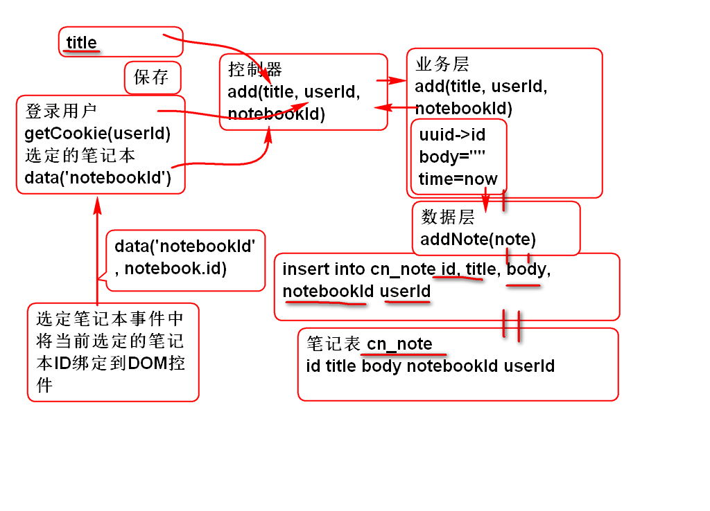
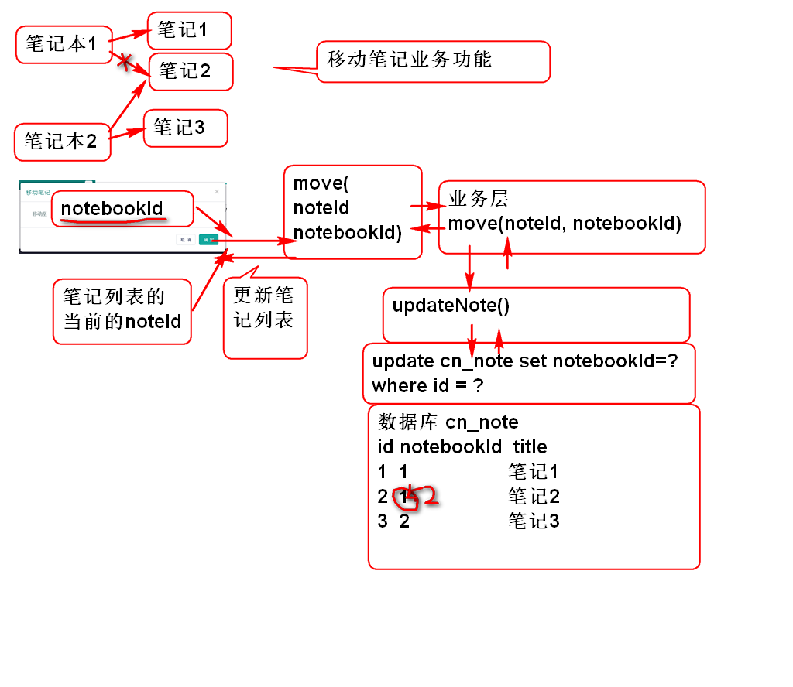
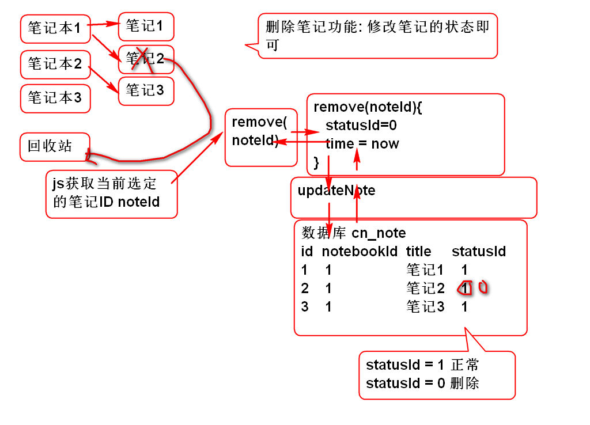
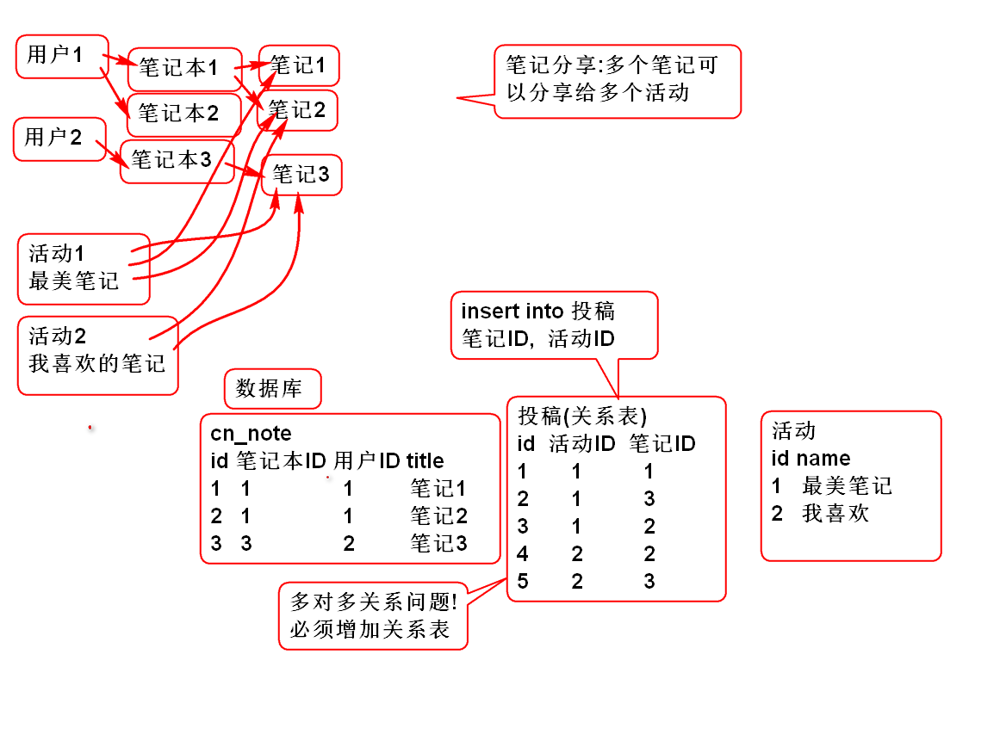

利用Chrome浏览器的调试功能可以检查Ajax通讯过程, 可以利用这个工具检查AJAX通讯时候的错误.

原理：

添加持久层方法NoteDao
int addNote(Note note);
添加SQL， NoteMapper.xml
<insert id="addNote"
parameterType="cn.tedu.cloudnote.entity.Note">
insert into cn_note
(cn_note_id,
cn_notebook_id,
cn_user_id,
cn_note_status_id,
cn_note_type_id,
cn_note_title,
cn_note_body,
cn_note_create_time,
cn_note_last_modify_time)
values
(#{id},#{notebookId},#{userId},
#{statusId},#{typeId},#{title},
#{body},#{createTime},
#{lastModifyTime})
</insert>
测试 TestNoteDao
业务层方法 NoteService
public Note addNote(String userId,
String notebookId, String title)
throws UserNotFoundException,
NotebookNotFoundException;
实现业务方法 NoteServiceImpl
public Note addNote(String userId,
String notebookId, String title)
throws UserNotFoundException,
NotebookNotFoundException {
if(userId==null||userId.trim().isEmpty()){
throw new UserNotFoundException("ID空");
}
User user=userDao.findUserById(userId);
if(user==null){
throw new UserNotFoundException("木有人");
}
if(notebookId==null||notebookId.trim().isEmpty()){
throw new NotebookNotFoundException("ID空");
}
Notebook notebook=notebookDao.findNotebookById(notebookId);
if(notebook==null){
throw new NotebookNotFoundException("没有笔记本");
}
if(title==null || title.trim().isEmpty()){
title="葵花宝典";
}
String id = UUID.randomUUID().toString();
String statusId = "0";
String typeId = "0";
String body = "";
long time=System.currentTimeMillis();
Note note = new Note(id, notebookId,
userId, statusId, typeId, title,
body, time, time);
int n = noteDao.addNote(note);
if(n!=1){
throw new NoteNotFoundException("保存失败");
}
return note;
}
测试 TestNoteService
... ...
控制器方法NoteController
@RequestMapping("/add.do")
@ResponseBody
public JsonResult add(String userId,
String notebookId, String title){
Note note=noteService.addNote(
userId, notebookId, title);
return new JsonResult(note);
}
浏览器测试
... ...
重构 alert/alert_note.html, 为按钮添加新的class, 用于绑定响应的事件:
<button type="button" class="btn btn-default cancle cancel" data-dismiss="modal">取 消</button>
<button type="button" class="btn btn-primary sure save-note">创 建</button>
提示: 取消按钮添加了 class cancle,创 建按钮添加了 save-note 注意: alert_note.html 文件的编码必须是utf-8的!
绑定事件
//绑定添加笔记按钮
$('#add_note').on('click', showAddNoteDialog);
//绑定关闭按键事件
$('#can').on('click', '.cancel, .close', closeDialog);
//绑定添加笔记对话框中的 保存按钮事件
$('#can').on('click', '.save-note', saveNote);
关闭窗口事件方法
function closeDialog(){
$('#can').empty();
$('.opacity_bg').hide();
}
重构loadNotes方法，在点击笔记本时候绑定笔记本ID
//绑定笔记本ID， 用于添加笔记功能
$('#input_note_title').data('notebookId', id);
打开添加笔记对话框方法
function showAddNoteDialog(){
var notebookId=$('#input_note_title').data('notebookId');
if(notebookId){
$('.opacity_bg').show();
$('#can').load('alert/alert_note.html');
}else{
alert("请选择笔记本！");
}
}
保存笔记按钮事件方法
//笔记对话框中的 保存按钮事件
function saveNote(){
var url = 'note/add.do';
var notebookId=$('#input_note_title')
.data('notebookId');
var title = $('#can #input_note').val();
var data = {userId:getCookie('userId'),
notebookId:notebookId,
title:title};
//console.log(data);
$.post(url, data, function(result){
if(result.state==SUCCESS){
var note=result.data;
//console.log(note);
showNote(note);
//找到显示笔记列表的ul对象
var ul = $('#pc_part_2 .contacts-list');
var li = noteTemplate.replace(
'[title]', note.title);
li = $(li);
li.find('a').addClass('checked');
ul.find('a').removeClass('checked');
ul.prepend(li);
closeDialog();
//123
}else{
alert(result.message);
}
});
}
请学员参考 添加笔记功能自行实现
在笔记列表项目上隐藏了一个子菜单, 用于处理笔记相关功能
更新笔记列表模板noteTemplate, 增加class用于识别按钮
var noteTemplate =
'<li class="online">'+
' <a><i class="fa fa-file-text-o" title="online" rel="tooltip-bottom"></i> [title]<button type="button" class="btn btn-default btn-xs btn_position btn_slide_down note_menu_btn"><i class="fa fa-chevron-down"></i></button></a>'+
' <div class="note_menu" tabindex="-1">'+
' <dl>'+
' <dt><button type="button" class="btn btn-default btn-xs btn_move" title="移动至..."><i class="fa fa-random"></i></button></dt>'+
' <dt><button type="button" class="btn btn-default btn-xs btn_share" title="分享"><i class="fa fa-sitemap"></i></button></dt>'+
' <dt><button type="button" class="btn btn-default btn-xs btn_delete" title="删除"><i class="fa fa-times"></i></button></dt>'+
' </dl>'+
' </div>'+
'</li>';
注意: 增加class notemenubtn
监听冒泡事件, 在 notemenubtn 按钮按下时候弹出菜单:
//监听笔记子菜单按钮点击事件
$('#pc_part_2').on('click', '.note_menu_btn', showNoteMenu);
添加事件处理方法 用于弹出子菜单:
function showNoteMenu(){
//如果不是选定的 笔记项目就不显示菜单
//找到 子菜单, 调用show()方法
//this 就是点击的按钮对象, 利用按钮的上下文关系
//找到子菜单, 并且调用show()方法
var menu=$(this).parent('.checked').next();
menu.toggle();
return false;//阻止事件继续传播
}
添加事件监听在点击文档其他位置时候关闭子菜单
//点击文档的任何位置都收起笔记子菜单
$(document).click(closeNoteMenu);
注意: showNoteMenu必须返回false阻止事件的继续冒泡传播, 如果不阻止就会触发关闭事件方法!
添加关闭子菜单的事件处理方法:
function closeNoteMenu(){
$('.note_menu').hide();
}
菜单的Dom层级关系如下(参考):
<body> //document.click(关闭菜单)
<div id="pc_part_2"> //on('click', '.note_menu_btn',
显示菜单return false)
<li>
<a>
<button class="note_menu_btn"></button> //click
</a>
<div class="note-menu">
</div>
</li>
</div>
</body>
原理:

移动笔记功能就是更新笔记的笔记本ID即可
> 重用 updateNote方法
NoteService
public boolean moveNote(String noteId,
String notebookId)
throws NoteNotFoundException,
NotebookNotFoundException;
NoteServiceImpl
public boolean moveNote(String noteId, String notebookId) throws NoteNotFoundException, NotebookNotFoundException {
if(notebookId==null||notebookId.trim().isEmpty()){
throw new NotebookNotFoundException("ID空");
}
Notebook notebook=notebookDao.findNotebookById(notebookId);
if(notebook==null){
throw new NotebookNotFoundException("没有笔记本");
}
if(noteId==null || noteId.trim().isEmpty()){
throw new NoteNotFoundException("ID不能空");
}
Note note = noteDao.findNoteById(noteId);
if(note==null){
throw new NoteNotFoundException("没有对应的笔记");
}
Note data = new Note();
data.setId(noteId);
data.setNotebookId(notebookId);
data.setLastModifyTime(System.currentTimeMillis());
System.out.println(data);
int n = noteDao.updateNote(data);
return n==1;
}
测试
略...
NoteController
@RequestMapping("/move.do")
@ResponseBody
public JsonResult move(String noteId,
String notebookId){
boolean success=noteService.moveNote(noteId, notebookId);
return new JsonResult(success);
}
测试
略...
监听笔记子菜单移动按钮事件:
//打开移动笔记对话框
$('#pc_part_2').on('click', '.btn_move',
showMoveDialog);
添加打开笔记对话框事件方法:
function showMoveDialog(){
//显示移动笔记的对话框, 在页面加载成功以后, 将
//列出笔记列表信息
$('#can').load('alert/alert_move.html', function(){
//获取全部笔记本列表 li
//将li中的笔记信息填充到select列表中
$('#moveSelect').empty();
$('#pc_part_1 li').each(function(){
var li = $(this);
//创建option对象
var opt = $('<option></option>')
.val(li.data('notebookId'))
.html(li.text().trim());
//添加到 select 列表中
$('#moveSelect').append(opt);
});
});
}
重构 alert/alert_move.html 添加 class
<button type="button" class="btn btn-default cancle cancel" data-dismiss="modal">取 消</button>
<button type="button" class="btn btn-primary sure move-note">确 定</button>
监听移动对话框中的 确定事件
//绑定移动笔记对话框中的 移动笔记按钮事件
$('#can').on('click', '.move-note',
moveNote);
添加移动笔记事件处理方法
function moveNote(){
var url = "note/move.do";
//得到选定的笔记, 获取当前选定笔记的ID
var li = $('#pc_part_2 .checked').parent();
var data = {noteId: li.data('noteId'),
notebookId: $('#moveSelect').val()}
$.post(url, data, function(result){
if(result.state==SUCCESS){
//更新显示效果
li.remove();
closeDialog();
}else{
alert(result.message);
}
})
}
原理:

原理:
